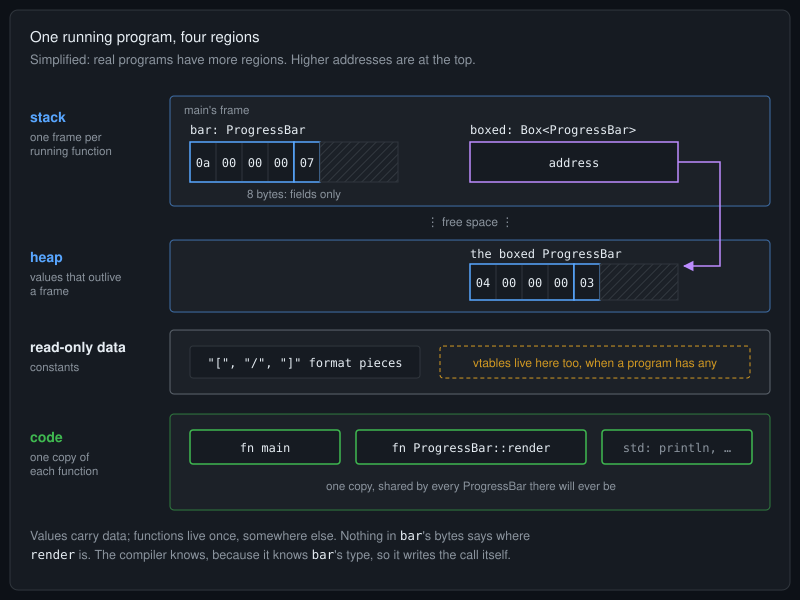
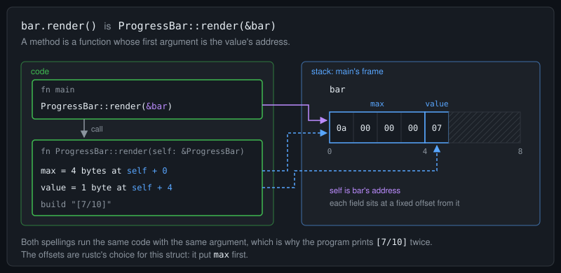
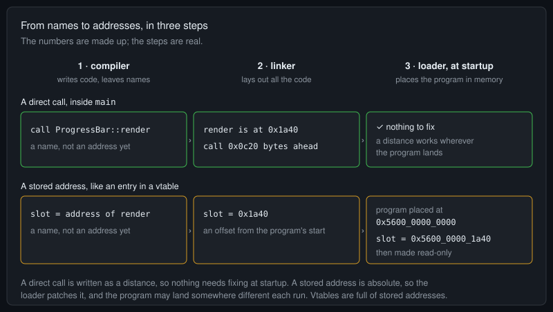

Telex
Telex
Where Your Rust Program Lives: Code, Data and Addresses
Before a vtable makes sense, it helps to picture where a running program keeps things. This post covers three ideas, each with one picture, and one small program to hang them on.
It's the groundwork for What dyn Redacts, and it stays at the level of diagrams on purpose. Tools like objdump can show every bit of it in a real binary, but that's a separate trip.
The program was compiled with rustc 1.97.0, edition 2024, on x86_64. The pictures are simplified: real programs have more regions, and the addresses shown are made up.
Compiles.
struct ProgressBar {
value: u8,
max: u32,
}
impl ProgressBar {
fn render(&self) -> String {
format!("[{}/{}]", self.value, self.max)
}
}
fn main() {
// One value on the stack, one on the heap
let bar = ProgressBar { value: 7, max: 10 };
let boxed = Box::new(ProgressBar { value: 3, max: 4 });
// Two values, one render function
println!("{} {}", bar.render(), boxed.render());
// A method call is a function call that passes the value's address
println!("{}", ProgressBar::render(&bar));
// The value holds its fields and nothing else
println!("ProgressBar is {} bytes", size_of::<ProgressBar>());
}Output:
[7/10] [3/4]
[7/10]
ProgressBar is 8 bytes1. Code and data live apart

A running program keeps different kinds of things in different places:
- The stack holds each running function's local values.
barlives inmain's frame, and so doesboxed, which is only an address. - The heap holds values that need to outlive a frame or be sized at run time. The
ProgressBarthatboxedowns lives there. - Read-only data holds constants, such as the pieces of the format string.
- The code holds the compiled functions:
main,ProgressBar::render, and whatever they use from std.
The last line of output is the point: a ProgressBar is 8 bytes, which is exactly max, value and padding. There's no room for anything else, and nothing else is there. However many progress bars exist, there's one render, in the code.
So how does bar.render() find render? Not through bar. The compiler knows bar is a ProgressBar, so it knows which render to call, and it writes that call into main itself.
2. A method is a function that gets an address

self is the value's address, and each field sits at a fixed offset from it.The second line of output comes from ProgressBar::render(&bar), and it matches the first, because that's what bar.render() means. A method is an ordinary function whose first argument, self, is the address of the value it was called on. The function finds each field at a fixed distance from that address: here max at 0 and value at 4, because rustc put max first.
That's why one copy of render can serve every ProgressBar: each call simply passes a different address.
3. Names become addresses

Source code calls functions by name, but a processor jumps to addresses. Three steps get from one to the other:
- The compiler turns each part of the program into machine code. Wherever it needs another function's address, it leaves a note saying which name goes there.
- The linker puts all the code together, so every function now has a fixed place, and it fills in the notes.
- The loader runs each time the program starts. It places the program in memory, often at a different address each run, and finishes any notes that need the final address.
Which notes need that last step depends on how an address is written down. A direct call, like the one in main, is written as a distance from where the call sits: "the function is this many bytes ahead". The distance is the same wherever the program lands, so it's done once the linker has filled it in. A stored address, a pointer to a function kept as data, is absolute, so the loader adds the program's real position at startup. Tables that never change after that, like vtables, are then marked read-only.
Where this leads
Put the three ideas together. A value's bytes never contain its functions. The compiler finds the right function because it knows the value's type. And addresses that are stored as data are filled in by the linker and loader before main runs.
Now take the type away. Code holding a value whose type it doesn't know can't find render by itself, so the right addresses have to come along with the value. A table of stored addresses, in read-only data, one per type: that's a vtable. What dyn Redacts picks up from there.